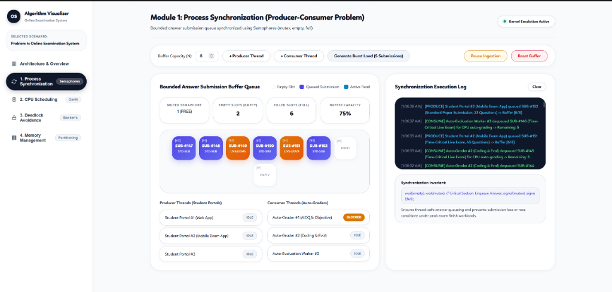
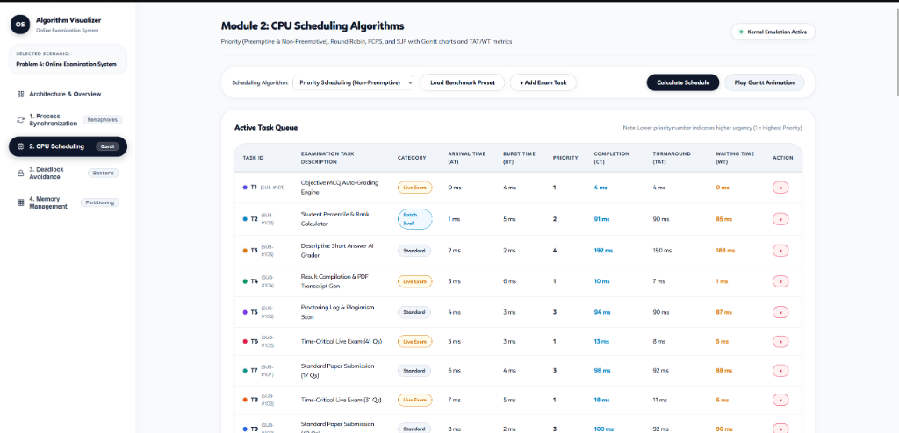
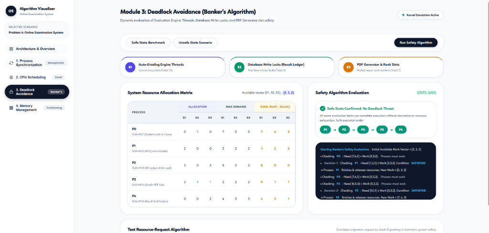
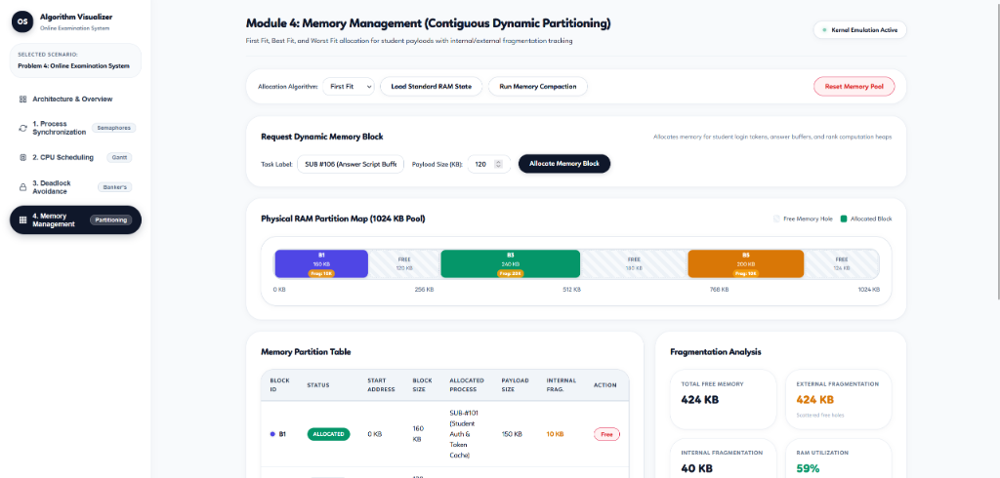

| Sr. | Group Member Name | Roll No. / UID | Signature |
|---|---|---|---|
| 1 | Joel Biju | 24003129 |
During peak examination sessions, an online examination platform receives thousands of student answer submissions simultaneously as the final countdown timer expires. Every submitted examination packet undergoes student authentication, objective MCQ auto-grading, database ledger score persistence, percentile rank computation, and PDF result transcript generation. These tasks consume significant CPU processing time and memory, and they compete for shared system resources including auto-grading execution engine threads, database write locks on the result ledger, and PDF generator worker slots.
Without proper operating system controls, the platform may lose or duplicate answer packets, corrupt student marks through race conditions, crash due to memory exhaustion, or enter a catastrophic deadlock where grading threads wait indefinitely for database locks held by blocked reporting processes. The goal is to design an OS-level resource-management solution that manages incoming submissions through a synchronized bounded queue, schedules evaluation tasks fairly, allocates memory efficiently, and avoids unsafe allocation of shared resources during peak workloads.
Objectives: Ingest every student answer submission without packet loss or duplicate grading; schedule evaluation tasks fairly and efficiently without thread starvation; avoid deadlocks under concurrent bursts; manage RAM efficiently and eliminate fragmentation.
Constraints: One simulated CPU core; a fixed-size submission buffer (N = 8 slots); 10 Auto-Grading Engine Threads (Resource A), 5 Database Write Locks (Resource B), and 7 PDF Generator Slots (Resource C); 1700 MB total physical memory divided into five static/dynamic partitions (100, 500, 200, 300, and 600 MB).
Assumptions: Each exam task has a known arrival time, burst time, memory payload size, and maximum resource requirement. Time is measured in milliseconds. Resources are reusable and released immediately when a task finishes. Memory remains allocated until task processing completes.
Producer-Consumer: Student submission portals act as producers and insert submitted answer packets into a fixed-size buffer queue. Background evaluation workers act as consumers and dequeue packets for grading. A binary semaphore (mutex) protects the shared queue, while empty and full counting semaphores prevent buffer overflow and underflow. Justification: at exam close, thousands of students click "Submit" simultaneously; without synchronization, concurrent threads could overwrite memory slots, corrupt pointers, or drop answers.
CPU Scheduling: Round Robin with a time quantum of 2 gives each pending evaluation task an equitable slice of CPU time and prevents long descriptive auto-grading or plagiarism scans from blocking short objective MCQ scoring. FCFS and non-preemptive SJF are also compared. Justification: fairness and bounded latency matter most under peak load, so Round Robin is chosen even though SJF yields a lower theoretical average waiting time.
Banker's Algorithm: Before granting Auto-Grading Threads, Database Write Locks, or PDF Generator Slots, the system evaluates the Banker's Safety Algorithm to verify that a safe sequence exists. Unsafe requests are denied or deferred, preventing deadlock. Justification: these resources are shared and held by tasks while waiting for others; a deadlock during exam processing would freeze the portal. Proactive avoidance is far safer than recovering from frozen databases.
Memory Management: Each answer packet and report generation payload receives a suitable memory block, released upon completion. Best Fit chooses the smallest available partition that can accommodate the request and is compared with First Fit. Justification: Best Fit leaves smaller unused holes and, on the benchmark workload, avoids the external fragmentation that causes First Fit to leave large tasks stalled.
The same five representative examination tasks are used across all modules. Resource A is the Auto-Grading Engine Threads, B is the Database Write Locks (Result Ledger), and C represents PDF Generator & Rank Slots.
| Task | Arrival | Burst | Memory (MB) | Allocation (A B C) | Max (A B C) | Need (A B C) |
|---|---|---|---|---|---|---|
| P0 | 0 | 5 | 212 | 0 1 0 | 7 5 3 | 7 4 3 |
| P1 | 1 | 3 | 417 | 2 0 0 | 3 2 2 | 1 2 2 |
| P2 | 2 | 8 | 112 | 3 0 2 | 9 0 2 | 6 0 0 |
| P3 | 3 | 2 | 426 | 2 1 1 | 2 2 2 | 0 1 1 |
| P4 | 4 | 6 | 90 | 0 0 2 | 4 3 3 | 4 3 1 |
Total resources are (10, 5, 7), and the initial available vector is (3, 3, 2). Memory partitions are 100, 500, 200, 300 and 600 MB.
Example: seven submissions arrive while no consumer is running.
| Event | empty | full | Result |
|---|---|---|---|
| Submissions 1-5 inserted | 0 | 5 | Buffer full |
| Producer of submission 6 tries to insert | 0 | 5 | Blocked on wait(empty) |
| Consumer removes submission 1 | 1 | 4 | signal(empty) wakes producer |
| Submission 6 inserted; producer of submission 7 tries | 0 | 5 | Submission 7 blocked until next removal |
No submission is lost or duplicated.
| Task | Arrival | Burst | Completion | Turnaround (TAT) | Waiting (WT) |
|---|---|---|---|---|---|
| P0 | 0 | 5 | 16 | 16 | 11 |
| P1 | 1 | 3 | 13 | 12 | 9 |
| P2 | 2 | 8 | 24 | 22 | 14 |
| P3 | 3 | 2 | 10 | 7 | 5 |
| P4 | 4 | 6 | 22 | 18 | 12 |
| Average | 15.0 | 10.2 | |||
Scheduling comparison:
| Algorithm | Avg. turnaround | Avg. waiting | Remark |
|---|---|---|---|
| FCFS | 12.2 | 7.4 | Simple, but long evaluations delay short ones |
| SJF (non-preemptive) | 10.4 | 5.6 | Lowest waiting time, but long evaluations may starve |
| Round Robin (q = 2) | 15.0 | 10.2 | Highest averages, but fairest with no starvation |
Safe sequence calculation (start: Work = Available = (3, 3, 2)):
| Step | Task | Need ≤ Work? | Work after adding Allocation |
|---|---|---|---|
| 1 | P1 | (1,2,2) ≤ (3,3,2) yes | (5,3,2) |
| 2 | P3 | (0,1,1) ≤ (5,3,2) yes | (7,4,3) |
| 3 | P4 | (4,3,1) ≤ (7,4,3) yes | (7,4,5) |
| 4 | P0 | (7,4,3) ≤ (7,4,5) yes | (7,5,5) |
| 5 | P2 | (6,0,0) ≤ (7,5,5) yes | (10,5,7) |
All examination tasks can finish, so the state is safe and the safe sequence is P1, P3, P4, P0, P2.
Request granted: P1 requests (1, 0, 2). It is within Need (1, 2, 2) and Available (3, 3, 2). After the temporary allocation, Available = (2, 3, 0) and the same safe sequence still exists, so the request is granted.
Request denied: P4 requests (3, 3, 0). It is within Need (4, 3, 1) and Available, but after the temporary allocation Available = (0, 0, 2) and P4's remaining Need = (1, 0, 1). No task's Need fits in (0, 0, 2), so the state is unsafe and the request is rolled back and denied.
With the sample examination tasks (blocks: 100, 500, 200, 300, 600 MB):
| Task | Size (MB) | First Fit: block (remaining) | Best Fit: block (remaining) |
|---|---|---|---|
| P0 | 212 | 500 (288) | 300 (88) |
| P1 | 417 | 600 (183) | 500 (83) |
| P2 | 112 | 500 (176) | 200 (88) |
| P3 | 426 | Not allocated (waits) | 600 (174) |
| P4 | 90 | 100 (10) | 100 (10) |
| Free memory | 869 MB (holes 10, 176, 200, 300, 183) | 443 MB (holes 10, 83, 88, 88, 174) | |
Fragmentation analysis: First Fit leaves P3 (426 MB) waiting even though 869 MB is free overall, because the free memory is split into holes and the largest is only 300 MB (external fragmentation). Best Fit allocates all five tasks, leaving 443 MB in holes of 10, 83, 88, 88 and 174 MB. The largest remaining hole is 174 MB.
| Test | Input | Expected result | Result |
|---|---|---|---|
| 1. Normal load | 5 submissions, buffer size 5 | All submissions inserted and evaluated | Pass |
| 2. Peak load | 10 submissions, buffer size 3 | Producers block when buffer is full and resume after consumer removal | Pass |
| 3. Safe request | P1 requests (1, 0, 2) | Granted; safe sequence P1, P3, P4, P0, P2 remains | Pass |
| 4. Unsafe request | P4 requests (3, 3, 0) | Denied by Banker's Algorithm (no safe sequence) | Pass |
| 5. Memory shortage | P3 (426 MB) with First Fit | No block fits, task waits; Best Fit places it in the 600 MB block | Pass |
Key results: Round Robin (q = 2) average TAT = 15.0 and WT = 10.2; SJF gives the lowest average WT (5.6); safe sequence = P1, P3, P4, P0, P2; Best Fit leaves 443 MB free and places every examination task.
Execution screenshots from the OS Algorithm Visualizer:




The bounded buffer prevents loss or duplication of incoming examination answer submissions under concurrent peak bursts, CPU scheduling ensures fair execution across automated evaluation worker threads without starvation, Banker's Algorithm avoids unsafe allocation of shared evaluation engines and database ledger write locks, and memory management dynamically partitions RAM to hold student token caches and report payloads. In the benchmark calculations, SJF gives the lowest average waiting time, while Round Robin provides predictable fairness. Best Fit successfully allocates all five examination tasks and leaves 443 MB in smaller manageable holes. Future system enhancements may incorporate multi-core priority queues for timed-out submissions and dynamic non-contiguous paging with virtual memory.